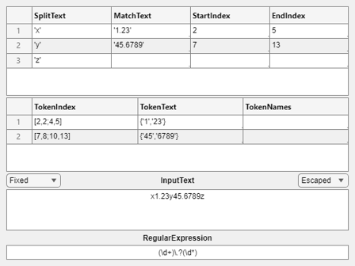

NATSORT Examples
The function NATSORT sorts the elements of a text array A (cell/string/...) taking into account number values within the text. This is known as natural order or alphanumeric order. Note that MATLAB's inbuilt SORT function sorts text by character code, as does SORT in most programming languages.
Other useful text sorting functions:
- Alphanumeric sort of filenames, foldernames, and filepaths: NATSORTFILES
- Alphanumeric sort the rows of a string/cell/table/etc array: NATSORTROWS
- Sort text into the order of arbitrary/custom text sequences: ARBSORT
Both NATSORTFILES and NATSORTROWS call NATSORT.
Contents
- Basic Usage: Integer Numbers
- Input 1: Array to Sort
- Input 2: Regular Expression
- Input 3+: Case Sensitivity
- Input 3+: Sort Direction
- Input 3+: Char/Number Order
- Input 3+: NaN/Number Order
- Input 3+: SSCANF Format String (Floating Point, Hexadecimal, Octal, Binary, 64 Bit Integer)
- Input 3+: Text Sorting Function
- Output 2: Sort Index
- Output 3: Debugging Array
- Regular Expression: Decimal Fractions, E-notation, +/- Sign
- Regular Expression: Hexadecimal, Octal, Binary Integers
- Regular Expression: Ignore Leading and/or Trailing Whitespace
- Example: Categorical Categories
- Example: Decimal Comma and Decimal Point
- Bonus: Interactive Regular Expression Tool
Basic Usage: Integer Numbers
By default NATSORT interprets consecutive digits in A as being a single integer, any remaining substrings are treated as text:
Aa = ["a2", "a10", "a1"]; sort(Aa) % for comparison natsort(Aa) Ab = ["v9.10", "v9.5", "v9.2", "v9.10.20", "v9.10.8"]; sort(Ab) % for comparison natsort(Ab)
ans =
1×3 string array
"a1" "a10" "a2"
ans =
1×3 string array
"a1" "a2" "a10"
ans =
1×5 string array
"v9.10" "v9.10.20" "v9.10.8" "v9.2" "v9.5"
ans =
1×5 string array
"v9.2" "v9.5" "v9.10" "v9.10.8" "v9.10.20"
Input 1: Array to Sort
The first input A must be one of the following array types:
- a cell array of character row vectors,
- a string array,
- a categorical array,
- a datetime array,
- any other array type that can be converted by CELLSTR
The sorted array is returned as the first output, for example:
Ac = categorical({'a2','a10','a1'});
natsort(Ac) % see also REORDERCATS below!
ans =
1×3 categorical array
a1 a2 a10
Input 2: Regular Expression
The optional second input argument rgx is a regular expression which specifies the number matching (see "Regular Expression" sections below for more examples of regular expressions for matching common numbers):
Ad = ["1.3", "1.10", "1.2"]; natsort(Ad) % by default match integers. natsort(Ad, '\d+\.?\d*') % match decimal fractions.
ans =
1×3 string array
"1.2" "1.3" "1.10"
ans =
1×3 string array
"1.10" "1.2" "1.3"
Input 3+: Case Sensitivity
By default NATSORT provides a case-insensitive sort of the array elements. An optional input argument selects case-sensitive/insensitive sorting:
Ae = ["a2", "A20", "A1", "a", "A", "a10", "A2", "a1"]; natsort(Ae, [], 'ignorecase') % default natsort(Ae, [], 'matchcase')
ans =
1×8 string array
"a" "A" "A1" "a1" "a2" "A2" "a10" "A20"
ans =
1×8 string array
"A" "A1" "A2" "A20" "a" "a1" "a2" "a10"
Input 3+: Sort Direction
By default NATSORT provides an ascending sort of the array elements. An optional input argument selects the sort direction (note that characters and numbers are either both ascending or both descending):
Af = ["2", "a", "", "10", "B", "1"]; natsort(Af, [], 'ascend') % default natsort(Af, [], 'descend')
ans =
1×6 string array
"" "1" "2" "10" "a" "B"
ans =
1×6 string array
"B" "a" "10" "2" "1" ""
Input 3+: Char/Number Order
By default NATSORT sorts characters after numbers. An optional input argument selects if characters are treated as greater-than or less-than numbers:
natsort(Af, [], 'num<char') % default natsort(Af, [], 'char<num')
ans =
1×6 string array
"" "1" "2" "10" "a" "B"
ans =
1×6 string array
"" "a" "B" "1" "2" "10"
Input 3+: NaN/Number Order
By default NATSORT sorts NaN after all other numbers. An optional input argument selects if NaN are treated as greater-than or less-than numbers:
Ag = ["10", "1", "NaN", "2"]; natsort(Ag, 'NaN|\d+', 'num<NaN') % default natsort(Ag, 'NaN|\d+', 'NaN<num')
ans =
1×4 string array
"1" "2" "10" "NaN"
ans =
1×4 string array
"NaN" "1" "2" "10"
Input 3+: SSCANF Format String (Floating Point, Hexadecimal, Octal, Binary, 64 Bit Integer)
The default format string '%f' will correctly parse many common number formats, including decimal integers, decimal fractions, NaN, Inf, and numbers written in E-notation. For hexadecimal, octal, binary, and 64-bit integers the format string must be specified as an input argument. Supported SSCANF formats are shown in this table:
| Format String | Number Types |
|---|---|
| %e, %f, %g | floating point numbers |
| %d | signed integer decimal |
| %i | signed integer decimal, octal, or hexadecimal |
| %ld, %li | signed integer 64 bit, decimal, octal, or hexadecimal |
| %u | unsigned integer decimal |
| %o | unsigned integer octal |
| %x | unsigned integer hexadecimal |
| %lu, %lo, %lx | unsigned integer 64-bit decimal, octal, or hexadecimal |
| %b | unsigned binary integer (custom parsing, not SSCANF) |
For example large integers can be converted to 64-bit numerics, with their full precision:
Ah = ["18446744073709551614", "18446744073709551615", "18446744073709551613"]; natsort(Ah, [], '%lu')
ans =
1×3 string array
"18446744073709551613" "18446744073709551614" "18446744073709551615"
Input 3+: Text Sorting Function
A text sorting function may provide an arbitrary/custom sequence sort, e.g. ARBSORT may be used to sort text into alphabetical order for many languages: refer to the ARBSORT help for more information on how to specify the custom text sequence order, handle diacritics, etc. Note that the sort direction, case sensitivity, etc. of the text sorting function must be appropriately parameterized as required: https://www.mathworks.com/help/matlab/math/parameterizing-functions.html.
An example using ARBSORT to sort into Spanish alphabetical order:
Ai = ["ña_2", "ño", "os", "ña_10", "ni", "ña_1"]; alfabeto = num2cell(['A':'N','Ñ','O':'Z']); % Spanish alphabet natsort(Ai, [], @(t)arbsort(t,alfabeto)) % download ARBSORT from FEX 132263.
ans =
1×6 string array
"ni" "ña_1" "ña_2" "ña_10" "ño" "os"
Output 2: Sort Index
The second output ndx is a numeric array of the sort indices, in general such that B = A(ndx) where B = natsort(A,...). Note that NATSORT provides a stable sort:
Ak = ["abc2xyz", "abc10xyz", "abc2xyz", "abc1xyz"]; [out,ndx] = natsort(Ak)
out =
1×4 string array
"abc1xyz" "abc2xyz" "abc2xyz" "abc10xyz"
ndx =
4 1 3 2
Output 3: Debugging Array
The third output dbg is a cell array which contains all matched numbers (after converting to numeric using the specified SSCANF format) and all non-number substrings of A. The cell array is intended for visually confirming that the numbers of A are being correctly identified by the regular expression. Note that the rows of the debugging cell array are linearly indexed from A, whereas the number of columns depends on how many numbers were identified within the text of A.
[~,~,dbg] = natsort(Ak)
dbg =
4×3 cell array
{'abc'} {[ 2]} {'xyz'}
{'abc'} {[10]} {'xyz'}
{'abc'} {[ 2]} {'xyz'}
{'abc'} {[ 1]} {'xyz'}
Regular Expression: Decimal Fractions, E-notation, +/- Sign
NATSORT relies on REGEXPI to detect numbers in the strings. In order to match the required number format (e.g. decimal fractions, exponents, or a positive/negative sign, etc.) simply provide a suitable regular expression as the second input argument:
Am = ["x+NaN", "x11.5", "x-1.4", "x", "x-Inf", "x+0.3"]; sort(Am) % for comparison natsort(Am, '(+|-)?(NaN|Inf|\d+\.?\d*)') An = ["0.56e007", "", "43E-2", "10000", "9.8"]; sort(An) % for comparison natsort(An, '(+|-)?\d+\.?\d*([eE](+|-)?\d+)?')
ans =
1×6 string array
"x" "x+0.3" "x+NaN" "x-1.4" "x-Inf" "x11.5"
ans =
1×6 string array
"x" "x-Inf" "x-1.4" "x+0.3" "x11.5" "x+NaN"
ans =
1×5 string array
"" "0.56e007" "10000" "43E-2" "9.8"
ans =
1×5 string array
"" "43E-2" "9.8" "10000" "0.56e007"
Regular Expression: Hexadecimal, Octal, Binary Integers
Integers encoded in hexadecimal, octal, or binary may also be parsed and sorted correctly. This requires both an appropriate regular expression to detect the integers and also a suitable SSCANF format string for converting the detected number string into numeric:
Ao = ["a0X7C4z", "a0X5z", "a0X18z", "a0XFz"]; sort(Ao) % for comparison natsort(Ao, '0X[0-9A-F]+', '%x') % hexadecimal Ap = ["a11111000100z", "a101z", "a000000000011000z", "a1111z"]; sort(Ap) % for comparison natsort(Ap, '[01]+', '%b') % binary
ans =
1×4 string array
"a0X18z" "a0X5z" "a0X7C4z" "a0XFz"
ans =
1×4 string array
"a0X5z" "a0XFz" "a0X18z" "a0X7C4z"
ans =
1×4 string array
"a000000000011000z" "a101z" "a11111000100z" "a1111z"
ans =
1×4 string array
"a101z" "a1111z" "a000000000011000z" "a11111000100z"
Regular Expression: Ignore Leading and/or Trailing Whitespace
Sometimes it may be useful to match numbers ignoring any leading and/or trailing whitespace. This can be achieved by appending/prepending '\s*' as required to the regular expression, for example:
Aq = [' 9';'23';'10';' 0';'5 '] % character matrix. natsort(Aq) % default matches only digits, whitespace is significant. natsort(Aq,'\s*\d+\s*') % match and ignore whitespace.
Aq =
5×2 char array
' 9'
'23'
'10'
' 0'
'5 '
ans =
5×2 char array
'5 '
'10'
'23'
' 0'
' 9'
ans =
5×2 char array
' 0'
'5 '
' 9'
'10'
'23'
Example: Categorical Categories
These examples show how to create categories in alphanumeric order, and how to use REORDERCATS to change the category order of such an array:
Ar = ["a2", "a10", "a1"]; % default categories order is not alphanumeric order: P = categorical(Ar); categories(P) % reorder categories of an existing categorical array: P = reordercats(P,natsort(categories(P))); categories(P) % alternatively create the categories in the required order: P = categorical(Ar,natsort(unique(Ar))); categories(P)
ans =
3×1 cell array
{'a1' }
{'a10'}
{'a2' }
ans =
3×1 cell array
{'a1' }
{'a2' }
{'a10'}
ans =
3×1 cell array
{'a1' }
{'a2' }
{'a10'}
Example: Decimal Comma and Decimal Point
Many languages use a decimal comma instead of a decimal point. NATSORT parses both the decimal comma and the decimal point, e.g.:
As = ["1,3", "1,10", "1,2"]; natsort(As, '\d+,?\d*') % match optional decimal comma
ans =
1×3 string array
"1,10" "1,2" "1,3"
Bonus: Interactive Regular Expression Tool
Regular expressions are powerful and compact, but getting them right is not always easy. One assistance is to download my interactive tool IREGEXP, which lets you quickly try different regular expressions and see all of REGEXP's outputs displayed and updated as you type:
iregexp('x1.23y45.6789z','(\d+)\.?(\d*)') % download IREGEXP from FEX 48930.